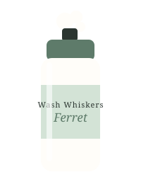

Bunny safe
Rabbits, guinea pigs and hamsters should almost never be bathed in water. Our spot-clean range is made for delicate skin and quick-to-chill small bodies.

A dry foam for bunny bottoms and soiled patches, without the stress or chill of a bath.
Tell us about your pet's coat, skin and temperament and we'll suggest a routine.
Ask our groomers →Mild wipes and a refresh mist for longer-haired cavies such as Peruvians and Abyssinians.
Fine natural dust baths that copy how desert rodents clean themselves in the wild.
Ferrets have a natural musk — bathing too often makes it worse. Freshen gently instead.

Tell us about your pet's coat, skin and temperament and we'll suggest a routine.
Ask our groomers →No running water, no slippery tubs and no fear. Grooming feels like petting.
A full bath can use 40–80 litres. A waterless groom uses none.
Less frequent wet bathing helps protect natural coat oils.
At home, in the car, on holiday or right after a muddy walk.